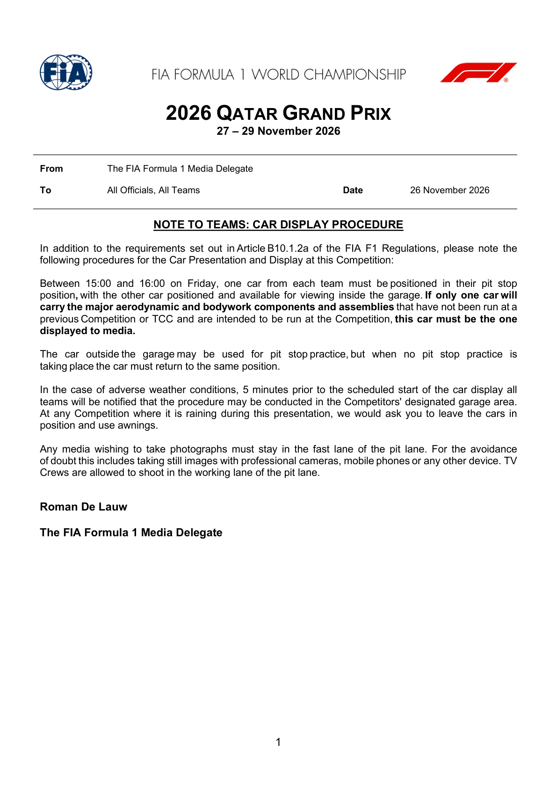

Car Development & Upgrades
FIA car-presentation filings, parts changes and display logistics for Qatar.
FIA official car-presentation, upgrade & parts-change documents
Official source; curated transcription may await review. Linked PDFs are the authority. Discovery does not extract or verify numeric values, and does not replace the curated material below.
Last successful FIA document discovery: 2026-11-26T18:34:29.830675+00:00. This is retrieval time, not issue time; newer revisions may exist.
- 2026_qatar_grand_prix_-_car_display_procedure.pdf (official PDF)
How this page gets filled
- Teams must submit a car presentation to the FIA listing every changed component and the reason for the change.
- That document is published in the FIA event documents, normally on the Friday of the race week.
- Each entry gives the component, the geometric change and the intended performance effect — the most reliable upgrade source there is.
- Circuit-specific packages are common at Lusail International Circuit; general performance upgrades appear anywhere.
FIA car-display procedure — Document 4
For Friday 27 November, the FIA requires one car from each team to be positioned in its pit-stop position between 15:00 and 16:00 local; the other car is to be available for viewing inside the garage. If only one car carries major aerodynamic or bodywork components not run at a previous Competition or TCC and intended for this event, that is the car to display. The outside car may be used for pit-stop practice, but must return to the same position when practice is not taking place. The notice also sets out an adverse-weather procedure. This governs the media display, not team upgrade declarations, and does not establish that any new components have been submitted. Original FIA Document 4, page 2.
Official FIA document screenshots
Automatically rendered from the official PDFs. These figures do not update or verify the curated numeric transcriptions above. Unchanged pages already illustrated above are not repeated here.
2026_qatar_grand_prix_-_car_display_procedure.pdf
PDF retrieved 2026-11-26T18:34:34+00:00; this is not its issue date.
